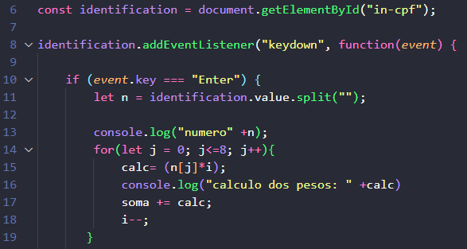
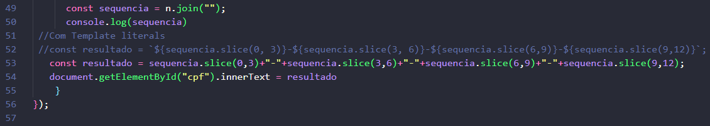

- Desenvolver o algoritmo para calcular os dois dÃgitos verificadores de um CPF. - Esse processo garante que o CPF seja válido e único para cada pessoa. - Digite os 9 primeiros dÃgitos do CPF (somente números): 123456789 - O programa vai calcular os dÃgitos finais: - Os dois dÃgitos finais do CPF são: 09 - CPF completo: 12345678909
O CPF (Cadastro de Pessoas FÃsicas) é um documento de identificação único para cada cidadão brasileiro. Ele é composto por 11 dÃgitos, sendo os dois últimos dÃgitos verificadores, que são calculados a partir dos nove primeiros dÃgitos. Vamos utilizar o CPF 123.456.789 como exemplo para explicar como os dÃgitos verificadores são calculados. Passo a Passo para Cálculo dos DÃgitos Verificadores 1. Estrutura do CPF O CPF é composto por 11 dÃgitos, no formato: XXX.XXX.XXX-YY, onde: XXX.XXX.XXX são os 9 primeiros dÃgitos (neste caso, 123.456.789). YY são os dois dÃgitos verificadores que vamos calcular. 2. Cálculo do Primeiro DÃgito Verificador (10º dÃgito) Para calcular o primeiro dÃgito verificador, seguimos os seguintes passos: Multiplicar cada um dos 9 primeiros dÃgitos por um peso que começa em 10 e diminui até 2: 1º dÃgito: 1 × 10 = 10 2º dÃgito: 2 × 9 = 18 3º dÃgito: 3 × 8 = 24 4º dÃgito: 4 × 7 = 28 5º dÃgito: 5 × 6 = 30 6º dÃgito: 6 × 5 = 30 7º dÃgito: 7 × 4 = 28 8º dÃgito: 8 × 3 = 24 9º dÃgito: 9 × 2 = 18 Somar todos os resultados das multiplicações: 10 + 18 + 24 + 28 + 30 + 30 + 28 + 24 + 18 = 210 Calcular o resto da divisão da soma por 11: 210 ÷ 11 = 19 com resto 1 Determinar o primeiro dÃgito verificador: Se o resto for menor que 2, o dÃgito verificador é 0. Caso contrário, o dÃgito verificador é 11 - resto. Neste caso, 11 - 1 = 10. Como o dÃgito verificador deve ser um único número, consideramos 0. Primeiro dÃgito verificador: 0 3. Cálculo do Segundo DÃgito Verificador (11º dÃgito) Agora, para calcular o segundo dÃgito verificador, utilizamos os 9 primeiros dÃgitos mais o primeiro dÃgito verificador (que acabamos de calcular). O processo é semelhante, mas os pesos começam em 11 e diminuem até 2. Multiplicar cada um dos 10 dÃgitos (9 primeiros + 1º verificador) por um peso que começa em 11 e diminui até 2: 1º dÃgito: 1 × 11 = 11 2º dÃgito: 2 × 10 = 20 3º dÃgito: 3 × 9 = 27 4º dÃgito: 4 × 8 = 32 5º dÃgito: 5 × 7 = 35 6º dÃgito: 6 × 6 = 36 7º dÃgito: 7 × 5 = 35 8º dÃgito: 8 × 4 = 32 9º dÃgito: 9 × 3 = 27 1º verificador: 0 × 2 = 0 Somar todos os resultados das multiplicações: 11 + 20 + 27 + 32 + 35 + 36 + 35 + 32 + 27 + 0 = 255 Calcular o resto da divisão da soma por 11: 255 ÷ 11 = 23 com resto 2 Determinar o segundo dÃgito verificador: Se o resto for menor que 2, o dÃgito verificador é 0. Caso contrário, o dÃgito verificador é 11 - resto. Neste caso, 11 - 2 = 9. Segundo dÃgito verificador: 9 4. CPF Completo Com os dois dÃgitos verificadores calculados, o CPF completo fica: 123.456.789-09 Resumo: Os 9 primeiros dÃgitos: 123.456.789 Primeiro dÃgito verificador: 0 Segundo dÃgito verificador: 9 CPF completo: 123.456.789-09
👉 Algumas variáveis globais que serão usadas em todo o projeto.
👉 A variável identification é declarada com const e recebe o elemento HTML de um campo de entrada/input com o ID.
👉 O método .addEventListener() é chamado na variável identification para anexar um manipulador de eventos. O evento escutado é 'keydown' (disparado quando uma tecla é pressionada).
👉 No if, verificamos se a tecla que foi pressionada via event.key é a tecla Enter. Isso garante que o código dentro do bloco só será executado quando o usuário terminar de digitar e pressionar Enter.
👉 Todo o código a partir de agora será feito dentro do if, pois só executa se Enter for clicado.

👉 A variável n recebe o número digitado no input e usa o split() para separar esse número todo, um por um. Usar o split somente com aspas significa que ele irá separar por vÃrgulas. Exemplo: 123456789 se torna 1,2,3,4,5,6,7,8,9.
👉 O for serve para percorrermos todos os números, ou seja, 9 números. Por isso, o for começa em 0 e vai até ser igual a 8.
👉 A variável calc, em cada iteração do laço, vai receber o número que está em n no Ãndice j. Isso significa que o primeiro número do nosso 123456789 é 1, pois o separamos com o split. j é o Ãndice que começa em 0, então sabemos que o número 1 se encontra na posição 0, o 2 na posição 1 e assim por diante.
👉 n[j] deve ser multiplicado pelo peso do cálculo. Declaramos a variável i sendo 10, pois começamos o cálculo multiplicando por 10. Agora temos: 1 × 10.
👉 Na linha 17, a nossa variável soma recebe seu próprio valor e soma com calc. soma += calc. A variável soma, que era 0, adicionou 10; então, soma agora é 10.
👉 Por último, precisamos diminuir 1 de i, por isso o i--; agora, i é 9.
👉 O for fará isso com todos os 9 dÃgitos, sempre acrescentando à soma o novo valor de calc.
👉 Na linha 21, verificamos se o resto da divisão do nosso número por 11 é menor que 2. Basicamente, a soma total de tudo será dividida por 11. Se o que sobrar for menor que 2, então nosso verificador será 0.
👉 Senão, temos que pegar o número 11 e diminuir pelo que restou da divisão.
👉 Na linha 27, estamos colocando o nosso verificador na posição de Ãndice 9, pois sabemos que nosso Ãndice foi de 0 a 8, tendo, portanto, um número com 10 dÃgitos.
👉 Acabamos o cálculo do primeiro verificador; agora você deve fazer o segundo verificador sozinho. Lembre-se de mudar o valor de i e de j.

👉 Após você ter calculado o segundo verificador e tê-lo inserido no Ãndice 10, obtendo o número correto com 11 dÃgitos, devemos juntar esse número novamente. Para isso, usaremos o join vazio com aspas: join('') serve para remover as vÃrgulas.
👉 TÃnhamos 1,2,3,4,5,6,7,8,9,0,9 e agora teremos 12345678909.
👉 As linhas 53 e 54 são semelhantes. A linha 53 usa o que chamamos de Template String, uma forma mais prática de juntar texto com valores.
👉 Precisamos formatar esse número, e é por isso que usaremos agora o slice. Ele serve para pegar partes especÃficas da string, permitindo inserir algo em posições especÃficas.
👉 slice(0,3) + "-" significa que estamos começando do Ãndice 0 e indo até o terceiro (ou seja, a quarta casa), e nela colocaremos o sÃmbolo "-".
👉 Depois, faremos o mesmo começando do Ãndice 3 até o 6, e assim por diante.
👉 Por último, estamos passando nosso número formatado para ser mostrado no HTML.